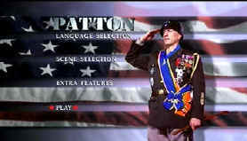

| Patton
(SE)/A-,B+ |
| Fox/1970/169/ANA
2.35 |
George S. Patton, Jr. is potent ammunition for the guns of biographers. The
biopic is no exception. Depicting several of Patton's tumultuous campaigns
during World War II, Patton delivers the flamboyant general with rapid
fire precision.
While the big moments are rightly spectacular in Patton,
Franklin J. Schaffner's film is really about the enigmatic man. Quieter, more meditative
moments are especially effective. Patton muses at past battles at the site of an
ancient battlefield or admires the daring of the opposing General Rommel. The
competition with Britain's Field Marshall Montgomery is treated by robust
humor.
 |
| DVD Menu:
Patton's image becomes part of the flag. ©Fox |
One of the great screen performances is of course at the core of Patton.
George C. Scott delivers Patton with more conviction and vigor than a great
general leading his troops in a decisive battle. Scott explores the character
with rare insight, delving into the psyche of the man. Scott's full
battery bravura performance is enriched by moments of humorous acknowledgement
in his belief of his own former lives. Scott fires his pearl handled pistols
with unerring accuracy. Carrying a three hour production on the shoulders of
one character is an incredible achievement. Scene after scene, Scott
stands tall, an icon in a snaking jeep slithering through vehicle laden roads
like a great halfback leading his team with a touchdown run. Scott plays
Patton with great confidence and complexity. One of my favorite moments comes when he ruefully
realizes he should have kissed that soldier he slapped. Karl Malden is a
solid General Omar Bradley. Malden
often gives complimentary performances that enhance the star power of another and his Bradley is
the case. He marvels at Patton in character and the at the same time marvels at Scott’s
performance without calling attention to his own. Smart casting in this film about a charismatic
central force.
The music of Jerry
Goldsmith is stunning and captures the scope of the film and the nature of its main character.
There are echoes of the past in the Goldsmith horns, of battles fought and won and lost. It’s
hard to imagine the film without Goldsmith’s great contribution.
The two DVD set of
Patton includes
an extensive documentary on the making of Patton
on disc two. The anamorphic
transfer extracts the best image from the source material. Colors are accurate with good saturation.
The distinctive color
tones for the two main settings of Patton are captured
effectively. If you like to look into the eyes of an actor giving arguably his greatest
performance, look beyond the surface into the soul of Scott giving life to Patton. The big pictures of the war are well replicated, capturing
the sweep of Schaffner’s vision of the African, Italian and European World War
II campaigns.
If you have ever seen the widescreen laserdisc of Patton, it was a jumble of twittering edges,
over-enhanced and unable to resolve detail without the
amplitude push. There's still a touch of halo around the details, especially in the scenes of a
small Patton against the larger landscapes. Perhaps this is not as sharp
as the newer films released on DVD, but Patton conquers the pitfalls of the NTSC
system just as he did the Germans. The sound is available is a Dolby Digital 5:1 mix. There is some localization, but mostly
the surround information is enveloping. The canons and tanks pack enough impact to destroy whatever
they are shooting at with conviction. There's good control of the visual peak transitions.
|
|
|
|

Selections from the Feature Archive include articles on
Akira Kurosawa, Blonde Bimbos,
Frank
Darabont, Steven Culp,
John
Herzfeld or Vietnam: The
Hollywood Pariah, and many more....
Director Walks the Wire
Balanced by an armor of movie lore and filmmaking daring, director John Herzfeld is comfortable
walking the high wire. Check out this interview by Stu Kobak.
Vietnam:
The Hollywood Pariah

During World War II, Hollywood pumped out war movies one after the other. Vietnam was was another
story. As far as Hollywood was concerned it was a pariah.

Spartacus
(SE) /A, B+

This is one of the great epic films with an animally electric performance
from Kirk Douglas. Great special edition.
 . .
The
Movie Poster Archive includes extensive poster images from the films of stars like Susan Hayward,
Kirk Douglas, Katharine Hepburn and many more. Our featured star is John
Wayne

 Have you visited Home Theater
Talk lately? One of the friendliest places on the Net for Home Theater and DVD discussion, you
can get help for installation problems or simply share your opinions with other
Vidiots. Have you visited Home Theater
Talk lately? One of the friendliest places on the Net for Home Theater and DVD discussion, you
can get help for installation problems or simply share your opinions with other
Vidiots.

Films of the Golden Age is
a showcase for special feature articles on film
people and Hollywood history, all illustrated with beautiful photographs and classic movie art.

Information on film sound in theaters and home theaters. Lots of helpful information provided in a
handsome interface.
|